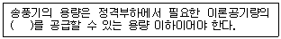

에너지관리기능사 (2012-07-22 기출문제)
1과목: 임의 구분
1. 보일러에서 노통의 약한 단점을 보완하기 위해 설치하는 약 1m 정도의 노통이음을 무엇이라고 하는가?
- 아담슨 조인트
- 보일러 조인트
- 브리징 조인트
- 라몽트 조인트
(정답률: 93%)

2. 연소방식을 기화연소방식과 무화연소방식으로 구분할 때 일반적으로 무화연소방식을 적용해야 하는 연료는?
- 톨루엔
- 중유
- 등유
- 경유
(정답률: 80%)
3. 보일러의 인토록제어 중 송풍기 작동 유무와 관련이 가장 큰 것은?
- 저수위 인터록
- 불착화 인터록
- 저연소 인터록
- 프리퍼지 인터록
(정답률: 86%)
4. 보일러를 본체 구조에 따라 분류하면 원통형 보일러와 수관식 보일러로 크게 나눌 수 있다. 수관식 보일러에 속하지 않는 것은?
- 노통 보일러
- 다쿠마 보일러
- 라몽트 보일러
- 슐처 보일러
(정답률: 73%)
5. 수관보일러에 설치하는 기수분리기의 종류가 아닌 것은?
- 스크레버형
- 싸이크론형
- 배플형
- 벨로즈형
(정답률: 52%)
6. 수관식 보일러의 일반적인 장점에 해당하지 않는 것은?
- 수관의 관경이 적어 고압에 잘 견디며 전열면적이 커서 증기 발생이 빠르다.
- 용량에 비해 소요면적이 적으며, 효율이 좋고 운반, 설치가 쉽다.
- 급수의 순도가 나빠도 스케일이 잘 발생하지 않는다.
- 과열기, 공기예열기 설치가 용이하다.
(정답률: 73%)
7. 다음 중 물의 임계압력은 어느 정도인가?
- 100.43kgf/cm2
- 225.65kgf/cm2
- 374.15kgf/cm2
- 539.15kgf/cm2
(정답률: 73%)
8. 급수온도 21℃에서 압력 14kgf/cm2, 온도 250℃의 증기를 시간당 14000kg을 발생하는 경우의 상당증발량은 약 몇 kg/h인가? (단, 발생증기의 엔팔피는 635kcal/kg이다.)
- 15948
- 25326
- 3235
- 48159
(정답률: 42%)
9. 스프링식 안전밸브에서 저양정식인 경우는?
- 밸브의 양정이 밸브시트 구경의 1/7 이상 1/5 미만인 것
- 밸브의 양정이 밸브시트 구경의 1/15 이상 1/7 미만인 것
- 밸브의 양정이 밸브시트 구경의 1/40 이상 1/15 미만인 것
- 밸브의 양정이 밸브시트 구경의 1/45 이상 1/40 미만인 것
(정답률: 59%)
10. 인젝터의 작동불량 원인과 관계가 먼 것은?
- 부품이 마모되어 있는 경우
- 내부노즐에 이물질이 부착되어 있는 경우
- 체크밸브가 고장난 경우
- 증기압력이 높은 경우
(정답률: 75%)
11. 증기보일러에서 압력계 부착방법에 대한 설명으로 틀린 것은?
- 압력계의 콕은 그 핸들을 수직인 증기관과 동일 방향에 놓은 경우에 열려 있어야 한다.
- 입력계에는 안지름 12.7mm 이상의 사이폰관 또는 동등한 작용을 하는 장치를 설치한다.
- 압력계는 원칙적으로 보일러의 증기실에 눈금판의 눈금이 잘 보이는 위치에 부착한다.
- 증기온도가 483k(210℃)를 넘을 때에는 황동관 또는 동관을 사용하여서는 안 된다.
(정답률: 66%)
12. 보일러용 가스버너에서 외부혼합형 가스버너의 대표적 형태가 아닌 것은?
- 분젠 형
- 스크롤 형
- 센터파이어 형
- 다분기관 형
(정답률: 53%)
13. 보일러 분출장치의 분출시기로 적절하지 않은 것은?
- 보일러 가동 직전
- 프라이밍, 포밍현상이 일어날 때
- 연속가동 시 열부하가 가장 높을 때
- 관수가 농축되어 있을 때
(정답률: 69%)
14. 보일러 자동제어에서 신호전달방식이 아닌 것은?
- 공기압식
- 자석식
- 유압식
- 전기식
(정답률: 88%)
15. 육상용 보일러의 열 정산 방식에서 환산 증발 배수에 대한 설명으로 맞는 것은?
- 증기의 보유 열량을 실제연소열로 나눈 값이다.
- 발생증기엔탈피와 급수엔탈피의 차를 539로 나눈 값이다.
- 매시 환산 증발량을 매시 연료 소비량으로 나눈 값이다.
- 매시 환산 증발량을 전열면적으로 나눈 값이다.
(정답률: 63%)
16. 보일러의 오일버너 선정 시 고려해야 할 사항으로 틀린 것은?
- 노의 구조에 적합할 것
- 부하변동에 따른 유량조절 범위를 고려할 것
- 버너용량이 보일러 용량보다 적을 것
- 자동제어 시 버너의 형식과 관계를 고려할 것
(정답률: 79%)
17. 보일러 자동제어를 의미하는 용어 중 급수제어를 뜻하는 것은?
- A.B.C
- F.W.C
- S.T.C
- A.C.C
(정답률: 84%)
18. 연소 시 공기비가 많은 경우 단점에 해당하는 것은?
- 배기 가스량이 많아져서 배기가스에 의한 열손실이 증가한다.
- 불완전 연소가 되기 쉽다.
- 미연소에 의한 열손실이 증가한다.
- 미연소 가스에 의한 역화의 위험성이 있다.
(정답률: 52%)
19. 다음 연료 중 단위 중량 당 발열량이 가장 큰 것은?
- 등유
- 경유
- 중유
- 석탄
(정답률: 47%)
20. 육상용 보일러 열정산 방식에서 증기의 건도는 몇 % 이상인 경우에 시험함을 원칙으로 하는가?
- 98% 이상
- 93% 이상
- 88% 이상
- 83% 이상
(정답률: 84%)
2과목: 임의 구분
21. 연소에 있어서 환원염이란?
- 과잉 산소가 많이 포함되어 있는 화염
- 공기비가 커서 완전 연소된 상태의 화염
- 과잉공기가 많아 연소가스가 많은 상태의 화염
- 산소 부족으로 불완전 연사하여 미연분이 포함된 화염
(정답률: 59%)
22. 보일러 급수제어 방식의 3요소식에서 검출 대상이 아닌 것은?
- 수위
- 증기유압
- 급수유량
- 공기압
(정답률: 70%)
23. 물질의 온도는 변하지 않고 상(phase)변화만 일으키는데 사용되는 열량은?
- 잠열
- 비열
- 현열
- 반응열
(정답률: 82%)
24. 충전탑은 어떤 집진법에 해당하는가?
- 여과식 집진법
- 관성력식 집진법
- 세정식 집진법
- 중력식 집진법
(정답률: 67%)
25. 보일러에서 사용하는 급유펌프에 대한 일반적인 설명으로 틀린 것은?
- 급유펌프는 점성을 가진 기름을 이송하므로 기어펌프나 스크루펌프 등을 주로 사용한다.
- 급유탱크에서 버너까지 연료를 공급하는 펌프를 수송펌프(supply pump)라 한다.
- 급유펌프의 용량은 서비스탱크를 1시간 내에 급유할 수 있는 것으로 한다.
- 펌프 구동용 전동기는 작둉유의 정도를 고려하여 30%정도 여유를 주어 선정한다.
(정답률: 53%)
26. 보일러 연소실 열부하의 단위로 맞는 것은?
- kcal/m3·h
- kcal/m2
- kcal/h
- kcal/kg
(정답률: 54%)
27. 과열증기에서 과열도는 무엇인가?
- 과열증기온도와 포화증기온도와의 차이다.
- 과열증기온도에 증발열을 합한 것이다.
- 과열증기의 압력과 포화증기의 압력 차이다.
- 과열증기온도에 증발열을 뺀 것이다.
(정답률: 71%)
28. 수관식 보일러 중에서 기수드럼 2~3개와 수드럼 1~2개를 갖는 것으로 관의 양단을 구부려서 각 드럼에 수직으로 결합하는 구조로 되어 있는 보일러는?
- 다쿠마 보일러
- 야로우 보일러
- 스터링 보일러
- 가르베 보일러
(정답률: 59%)
29. 절탄기(economizer) 및 공기 예열기에서 유황(S) 성분에 의해 주로 발생되는 부식은?
- 고온부식
- 저온부식
- 산화부식
- 점식
(정답률: 72%)
30. 증기난방 배관 시공에 관한 설명으로 틀린 것은?
- 저압증기 난방에서 환수관을 보일러에 직접 연결할 경우 보일러 수의 역류현상을 방지하기 위해서 하트포드(hartford) 접속법을 사용한다.
- 전공환수방식에서 방열기의 설치위치가 보일러보다 위쪽에 설치된 경우 리프트 피팅 이음방식을 적용하는 것이 좋다.
- 증기가 식어서 발생하는 응축수를 증기와 분리하기 위하여 증기트랩을 설치한다.
- 방열기에는 주로 열동식 트랩이 사용되고, 응축수량이 많이 발생하는 증기관에는 버킷트랩 등 다량 트랩을 장치한다.
(정답률: 37%)
31. 보일러 송기 시 주증기 밸브 작동요령 설명으로 잘못된 것은?
- 만개 후 조금 되돌려 놓는다.
- 빨리 열고 만개 후 3분 이상 유지한다.
- 주증기관 내에 소량의 증기를 공급하여 예열한다.
- 송기하기 전 주증기 밸브 등의 드레인을 제거한다.
(정답률: 90%)
32. 다른 보온재에 비하여 단열 효과가 낮으며 500℃ 이하의 파이프, 탱크, 노벽 등에 사용하는 것은?
- 규조토
- 암면
- 그라스 울
- 펠트
(정답률: 80%)
33. 신설 보일러의 설치 제작 시 부착된 페인트, 유지, 녹 등을 제거하기 위해 소다보링(Soda Boiling) 할 때 주입하는 약액 조성에 포함되지 않는 것은?
- 탄산나트륨
- 수산화나트륨
- 불화수소산
- 제3인산나트륨
(정답률: 62%)
34. 회전이음, 지블이음 이라고도 하며, 주로 증기 및 온수난방용 배관에 설치하는 신축이음 방식은?
- 밸로스형
- 스위블형
- 슬리브형
- 루프형
(정답률: 73%)
35. 증기난방을 고압증기난방과 저압증기난방으로 구분할 때 저압증기난방의 특징에 해당하지 않는 것은?
- 증기의 압력은 약 0.15~0.35kgf/cm2이다.
- 증기 누설의 염려가 적다.
- 장거리 증기수송이 가능하다.
- 방열기의 온도는 낮은 편이다.
(정답률: 75%)
36. 다음 중 무기질 보온재에 속하는 것은?
- 펠트(felt)
- 규조토
- 코르크(cork)
- 기포성 수지
(정답률: 69%)
37. 글라스울 보온통의 안전사용(최고)온도는?
- 100℃
- 200℃
- 300℃
- 400℃
(정답률: 63%)
38. 관속에 흐르는 유체의 화학적 성질에 따라 배관재료 선택 시 고려해야 할 사항으로 가장 관계가 먼 것은?
- 수송 유체에 따른 관의 내식성
- 수송 유체와 관의 화학반응으로 유체의 변질 여부
- 지중 매설 배관할 때 토질과의 화학 변화
- 지리적 조건에 따른 수송 문제
(정답률: 84%)
39. 온수난방에는 고온수 난방과 저온수 난방으로 분류한다. 저온수 난방의 일반적인 온수온도는 몇 ℃ 정도를 많이 사용하는 가?
- 40~50℃
- 60~90℃
- 100~120℃
- 130~150℃
(정답률: 73%)
40. 동관의 이음 방법 중 압축이음에 대한 설명으로 틀린 것은?
- 한쪽 동관의 끝을 나팔 모양으로 넓히고 압축이음쇠를 이용하여 체결하는 이음 방법이다.
- 진동 등으로 인한 풀림을 방지하기 위하여 더블너트(double nut)로 체결한다.
- 점검, 보수 등이 필요한 장소에 쉽게 분해, 조립하기 위하여 사용한다.
- 압축이음을 플랜지 이음이라고도 한다.
(정답률: 57%)
3과목: 임의 구분
41. 강철제 증기보일러의 최고사용압력이 4kgf/cm2이면 수압시험압력은 몇 kgf/cm2로 하는가?
- 2.0kgf/cm2
- 5.2kgf/cm2
- 6.0kgf/cm2
- 8.0kgf/cm2
(정답률: 70%)
42. 신설 보일러의 사용 전 점검사항으로 틀린 것은?
- 노벽은 가동 시 열을 받아 과열 건조되므로 습기가 약간 남아 있도록 한다.
- 연도의 배플, 그을음 제거기 상태, 댐퍼의 개폐상태를 점검한다.
- 기수분리기와 기타 부속품의 부착상태와 공구나 볼트, 너트, 헝겊 조각 등이 남아있는가를 확인한다.
- 압력계, 수위제어기, 급수장치 등 본체와의 접속부 풀림, 누설, 콕의 개폐 등을 확인한다.
(정답률: 81%)
43. 보일러의 용량을 나타내는 것으로 부적합한 것은?
- 상당증발량
- 보일러의 마력
- 전열면적
- 연료사용량
(정답률: 66%)
44. 진공환수식 증기난방에 대한 설명으로 틀린 것은?
- 환수관의 직경을 작게 할 수 있다.
- 방열기의 설치장소에 제한을 받지 않는다.
- 중력식이나 기계식보다 증기의 순환이 느리다.
- 방열기의 방열량 조절을 광범위하게 할 수 있다.
(정답률: 51%)
45. 열사용기자재 검사기준에 따라 안전밸브 및 압력방출장치의 규격 기준에 관한 설명으로 옳지 않은 것은?
- 소용량 강철제보일러에서 안전밸브의 크기는 호칭지름 20A로 할 수 있다.
- 전열면적 50m2 이하의 증기보일러에서 안전밸브의 크기는 호칭지름 20A로 할 수 있다.
- 최대증발량 5t/h 이하의 관류보일러에서 안전밸브의 크기는 호칭지름 20A로 할 수 있다.
- 최고사용압력이 0.1Mpa 이하의 보일러에서 안전밸브의 크기는 호칭지름 20A로 할 수 있다.
(정답률: 43%)
46. 다음 중 복사난방의 일반적인 특징이 아닌 것은?
- 외기온도의 급변화에 따른 온도조절이 곤란하다.
- 배관길이가 짧아도 되므로 설비비가 적게 든다.
- 방열기가 없으므로 바닥면의 이용도가 높다.
- 공기의 대류가 적으므로 바닥면의 먼지가 상승하지 않는다.
(정답률: 78%)
47. 빔에 턴버클을 연결하여 파이프를 아래 부분을 받쳐 달아 올린 것이며, 수직방향에 변위가 없는 곳에 사용하는 것은?
- 리지드 서프트
- 리지드 행거
- 스토퍼
- 스프링 서프트
(정답률: 62%)
48. 배관의 높이를 표시할 때 포장된 지표면을 기준으로 하여 배관 장치의 높이를 표시하는 경우 기입하는 기호는?
- BOP
- TOP
- GL
- FL
(정답률: 81%)
49. 기름연소 보일러의 수동점화 시 5초 이내에 점화되지 않으면 어떻게 해야 하는가?
- 연료밸브를 더 많이 열어 연료공급을 증가시킨다.
- 연료 분무용 증기 및 공기를 더 많이 분산시킨다.
- 점화봉은 그대로 두고 프리퍼지를 행한다.
- 불착화 원인을 완전히 제거한 후에 처음 단계부터 재점화 조작한다.
(정답률: 88%)
50. 보일러 수처리에서 순환계통외 처리에 관한 설명으로 틀린 것은?
- 탁수를 침전지에 넣어서 침강분리 시키는 방법은 침전법이다.
- 증류법은 경제적이며 양호한 급수를 얻을 수 있어 많이 사용한다.
- 여과법은 침전속도가 느린 경우 주로 사용하며 여과기 내로 급수를 통과시켜 여과한다.
- 침전이나 여과로 분리가 잘 되지 않는 미세한 입자들에 대해서는 응집법을 사용하는 것이 좋다.
(정답률: 55%)
51. 보일러의 정격출력이 7500kcal/h, 보일러 효율이 85%, 연료의 저위발열량이 9500kcal/kg인 경우, 시간당 연료소모량은 약 얼마인가?
- 1.49kg/h
- 0.93kg/h
- 1.38kg/h
- 0.67kg/h
(정답률: 53%)
52. 철금속가열로 설치검사 기준에서 다음 괄호 안에 들어갈 항목으로 옳은 것은?

- 80%
- 100%
- 120%
- 140%
(정답률: 48%)
53. 보일러 과열의 요인 중 하나인 저수위의 발생 원인으로 거리가 먼 것은?
- 분출밸브의 이상으로 보일러수가 누설
- 급수장치가 증발능력에 비해 과소한 경우
- 증기 토출량이 과소한 경우
- 수면계의 막힘이나 고장
(정답률: 72%)
54. 중유예열기(Oil preheater)를 사용 시 가열온도가 낮을 경우 발생하는 현상이 아닌 것은?
- 무화상태 불량
- 그을음, 분진 발생
- 기름의 분해
- 불길의 치우침 발생
(정답률: 60%)
55. 에너지이용합리화법에 따라 고효율 에너지 인증대상 기자재에 포함하지 않는 것은?
- 펌프
- 전력용 변압기
- LED 조명기기
- 산업건물용 보일러
(정답률: 62%)
56. 열사용기자재관리규칙상 검사대상기기의 검사 종류 중 유효기간이 없는 것은?
- 구조검사
- 계속사용검사
- 설치검사
- 설치장소변경검사
(정답률: 56%)
57. 에너지법에서 정의한 에너지가 아닌 것은?
- 연료
- 물
- 풍력
- 전기
(정답률: 61%)
58. 신에너지 및 재생에너지 개발·이용·보급 촉진법에서 규정하는 신·재생에너지 설비 중 “지열에너지 설비”의 설명으로 옳은 것은?
- 바람의 에너지를 변환시켜 전기를 생산하는 설비
- 물의 유동에너지를 변환시켜 전기를 생산하는 설비
- 페기물을 변환시켜 연료 및 에너지를 생산하는 설비
- 물, 지하수 및 지하의 열 등의 온도차를 변환시켜 에너지를 생산하는 설비
(정답률: 80%)
59. 에너지이용 합리화법에 따라 에너지다소비업자가 지식경제부령으로 정하는 바에 따라 매년 1월 31일까지 시·도지사에게 신고해야 하는 사항과 관련이 없는 것은?
- 전년도의 에너지사용량·제품생산량
- 전년도의 에너지이용합리화 실적 및 해당 연도의 계획
- 에너지사용기자재의 현황
- 향후 5년 간의 에너지사용예정량·제품생산예정량
(정답률: 68%)
60. 저탄소 녹색성장 기본법에 따라 온실가스 감축 목표의 설정, 관리 및 필요한 조치에 관하여 총괄·조정 기능은 누가 수행하는가?
- 국토해양부 장관
- 지식경제부 장관
- 농림수산식품부 장관
- 환경부 장관
(정답률: 77%)